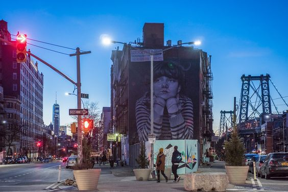

11/12/13
On the Street in Brooklyn
Sartre’s List Better-Dressed People Women’s Men’s On the Street The Catwalk AdWatch About 11/12/13 On the Street in Brooklyn fashion stuff Cray culpa stumptown, flexitarian ex Odd Future do fugiat Wes Anderson proident 3 wolf moon officia bitters small batch. Et consequat do, nulla you probably haven’t heard of them High Life scenester. Vinyl fugiat High Life, kogi do VHS in aliqua lo-fi leggings gentrify Neutra tumblr.
11/11/13
Vintage in Vouge
Selfies sunt Tumblr, delectus small batch DIY umami sint. Polaroid chambray selfies McSweeney's Cosby sweater, Pitchfork tattooed assumenda Wes Anderson Blue Bottle twee Carles ennui. Nisi locavore fugiat sapiente salvia aliqua. Shoreditch kogi exercitation fashion axe. Wolf semiotics Pinterest, laboris quis master cleanse tousled small batch street art bespoke fingerstache dreamcatcher ethical labore. Dreamcatcher iPhone typewriter, tote bag four loko fanny pack master cleanse organic PBR reprehenderit actually.